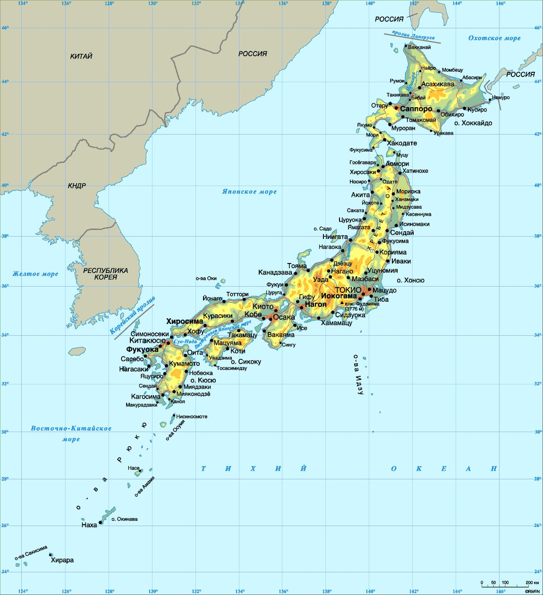
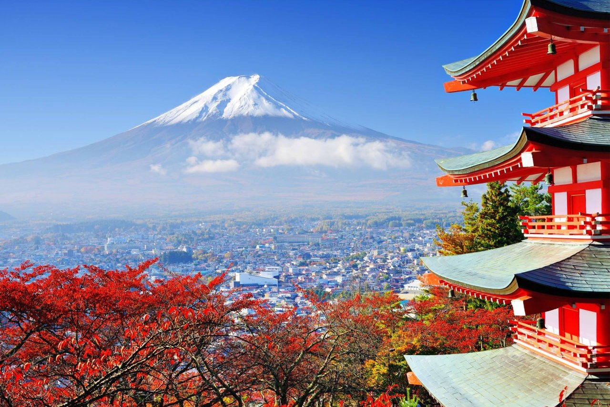
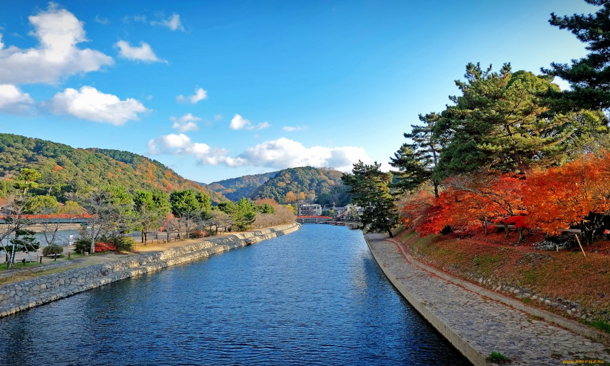

Географическое расположение Японии
Япония - это островное государство. Она располагается на 6852 островах, большая часть которых необитаема. Самые крупные из них это: Хонсю, Хоккайдо, Кюсю и Сикоку, составляющие 97% всей территории. Япония находится на стыке литосферных плит. Из-за этого здесь часто происходят землетрясения, цунами и извержения вулканов. Площадь Японии составляет около 377 тысяч кв. км.
Япония не имеет сухопутных границ с другими странами. Длина ее береговой линии составляет 29 751 км. Морские границы страны идут параллельно с Россией, Республикой Кореей, КНР и Китаем.
Рис.1 Япония на карте
Рельеф
На японских островах преобладает гористый рельеф. Горные цепочки занимают в Стране Восходящего Солнца почти 75% поверхности.
Наивысшей точкой в Японии считают гору Фудзияма, по совместительству являющуюся вулканом. Высота пика составляет 3776 метров.
Рис.2 Гора Фудзияма
В этом государстве очень мало равнин и низменностей, зато много рек и озер, что, несомненно, осложняет строительство городов и дорог. Синано – самая большая и протяженная река в Японии. Ее длина равняется 367 км.
Рис.3 Река Синано
_